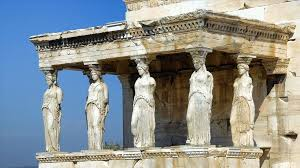
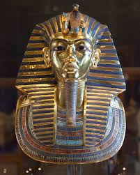
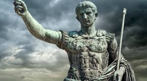

Antik Eserler
1. Parthenon Heykeli (Antik Yunan)
Parthenon Tapınağı'ndan alınan bu heykel, Antik Yunan'ın estetik ve mühendislik harikalarından biridir. M.Ö. 5. yüzyıla tarihlenmektedir.
2. Tutankhamun’un Altın Maskesi (Antik Mısır)
Antik Mısır firavunu Tutankhamun’un mezarından çıkarılan bu altın maske, döneminin en değerli sanat eserlerinden biri kabul edilir.
3. Augustus’un Heykeli (Antik Roma)
Roma İmparatoru Augustus'u temsil eden bu heykel, Roma İmparatorluğu'nun politik gücünü ve sanatsal zenginliğini simgeler.